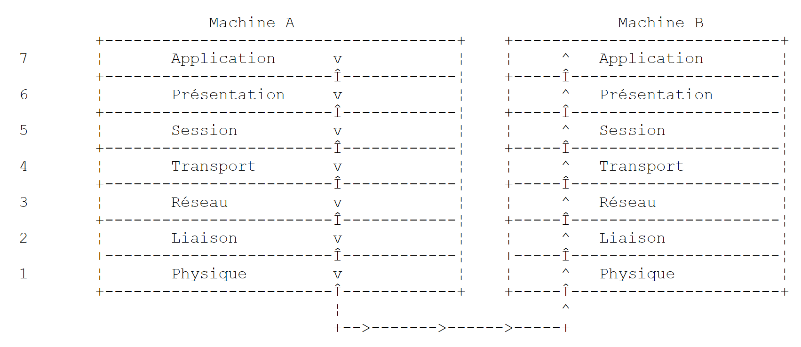
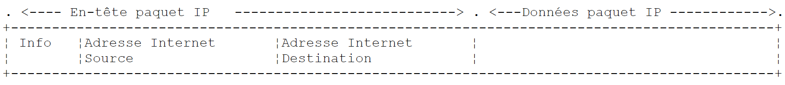
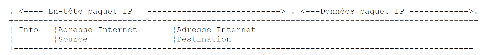
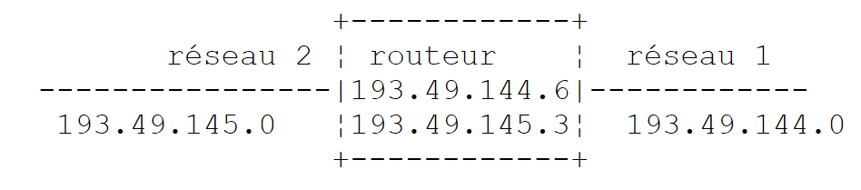
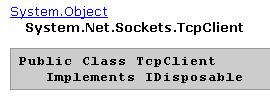

9. 编程 TCP-IP
9.1. 概述
9.1.1. 互联网协议
本文将介绍互联网通信协议，该协议套件也称为 TCP/IP（传输控制协议/互联网协议），其名称源自两个主要协议。 在着手构建分布式应用程序之前，读者最好对网络的运作原理，特别是对 TCP/IP 协议有整体的理解。
下文是 NOVELL 于 90 年代初发布的《Lan Workplace for Dos - Administrator's Guide》文档中部分内容的翻译。
构建异构计算机网络这一总体概念源于美国国防高级研究计划局（DARPA）的研究成果。 DARPA开发了一套被称为TCP/IP的协议套件，该套件允许异构机器之间进行通信。 这些协议曾在名为 ARPAnet 的网络上进行过测试，该网络后来演变为 INTERNET 网络。 TCP/IP协议定义了传输和接收的格式及规则，这些规则与网络架构和所用硬件无关。
由 DARPA 设计并由 TCP/IP 协议管理的网络是一个分组交换网络。 此类网络将信息以称为“数据包”的小块形式在网络中传输。因此，如果一台计算机传输一个大文件，该文件将被分割成小块，这些小块将被发送到网络中，并在目的地重新组合。TCP/IP定义了这些数据包的格式，即：
- 数据包来源
- 目的地
- 长度
- 类型
9.1.2. OSI 模式
TCP/IP协议大致遵循由ISO（国际标准化组织）定义的、名为OSI（开放系统互连参考模型）的开放网络模型。 该模型描述了一个理想网络，其中机器之间的通信可通过七层模型来表示：
 |
每一层从下层接收服务，并向上层提供服务。假设位于不同机器A和B上的两个应用程序想要通信：它们在Application层进行通信。 它们无需了解网络运行的所有细节：每个应用程序将想要传输的信息交给下层——即Présentation层。因此，应用程序只需了解与Présentation层交互的规则即可。
一旦信息进入Présentation层，它就会根据其他规则传递到Session层，以此类推，直到信息到达物理介质并被物理传输到目标机器。 到达后，数据将经历与发送端机器上处理过程相反的处理。
在每一层，负责发送信息的发送方进程将其发送给另一台机器上属于同一层的接收方进程。这一过程遵循某些规则，即所谓的“该层协议”。因此，最终的通信图示如下：
 |
各层的作用如下：
负责在物理介质上传输比特。 该层包含数据处理终端设备（E.T.T.D.），如终端或计算机，以及数据电路终端设备（E.T.C.D.），如调制解调器、多路复用器和集中器。该层的主要关注点包括： . 信息编码方式的选择（模拟或数字） . 传输模式的选择（同步或异步）。 | |
隐藏物理层的物理特性。检测并纠正传输错误。 | |
管理网络中发送的信息应遵循的路径。这被称为 routage：确定信息应遵循的路线，以便其到达收件人。 | |
允许两个应用程序之间进行通信，而前几层仅支持机器间的通信。该层提供的一项服务可能是多路复用：传输层可以利用同一条网络连接（机器到机器）来传输属于多个应用程序的信息。 | |
该层包含允许应用程序在远程机器上建立并维持工作会话的服务。 | |
该层旨在统一不同机器上的数据表示形式。因此，来自机器A的数据将在发送至网络前，由机器A的Présentation层按照标准格式进行“包装”。 数据到达目标机器B的Présentation层后，该层将通过标准格式识别数据，并对其进行重新包装，以便机器B上的应用程序能够识别。 | |
在此层级，通常存在与用户密切相关的应用程序，例如电子邮件或文件传输。 |
9.1.3. TCP/IP 模型
OSI 模型是一个理想但尚未实现的模型。TCP/IP 协议套件以如下形式接近该模型：
 |
物理层
在局域网中，通常采用以太网或令牌环技术。本文仅介绍以太网技术。
以太网
这是20世纪70年代初由施乐公司（Xerox）发明、并于1978年由施乐、英特尔和数字设备公司（Digital Equipment）共同制定的分组交换局域网技术的名称。 该网络在物理上由一根直径约1.27厘米、最长500米的同轴电缆构成。可通过répéteurs进行扩展，但两台设备之间最多只能使用两个中继器。 该电缆为无源设备：所有有源元件均位于连接至电缆的设备上。每台设备通过一张网络接入卡连接至电缆，该卡包含：
- 一个发射器（transceiver），用于检测电缆上的信号，并将模拟信号转换为数字信号，反之亦然。
- 一个耦合器，用于接收来自发射器的数字信号并将其传输至计算机进行处理，或反向传输。
以太网技术的主要特点如下：
- 传输速率为10兆比特/秒。
- 总线拓扑：所有设备均连接在同一根电缆上
 |
- 广播网络——发送设备将信息连同接收设备的地址一起发送到电缆上。所有连接的设备都会收到这些信息，只有目标设备才会保留它们。
- 其访问方式如下：希望发送数据的发射器会监听电缆——从而检测到是否存在载波信号，若存在则表明正在进行传输。这就是CSMA技术（载波侦听多路访问）。 若未检测到载波，发送器即可决定开始发送。可能有多个发送器同时做出这一决定。此时，发送的信号会相互干扰，即发生“碰撞”。 发射器能检测到这种情况：在向电缆发送信号的同时，它也会监听电缆上实际传输的内容。如果检测到电缆上传输的信息并非自己发送的，它便会推断出发生了碰撞，并停止发送。其他正在发送的发射器也会采取同样的措施。 各发送器将在一个随机时间间隔后恢复发送，该间隔因设备而异。该技术被称为CD（碰撞检测）。因此，这种访问方式被称为CSMA/CD。
- 48位地址。每台机器都有一个地址，此处称为物理地址，该地址被写入连接机器与网线的网卡中。该地址被称为机器的Ethernet地址。
网络层
在此层中，我们发现 IP、ICMP、ARP 和 RARP 协议。
在网络的两个节点之间传输数据包 | |
ICMP 实现一台机器上的 IP 协议程序与另一台机器上的该协议程序之间的通信。因此，它是在 IP 协议内部进行消息交换的协议。 | |
负责将机器的互联网地址映射到机器的物理地址 | |
将机器物理地址映射到机器互联网地址 |
传输层/会话层
在此层中，包含以下协议：
确保两个客户端之间信息可靠地传递 | |
确保两个客户端之间信息的不可靠传输 |
应用层/表示层/会话层
此处包含多种协议：
终端仿真器，允许机器A作为终端连接到机器B | |
支持文件传输 | |
支持文件传输 | |
支持网络用户之间的消息交换 | |
将主机名转换为该主机的互联网地址 | |
由 sun 创建 MicroSystems，它规定了一种与机器无关的数据标准表示形式 | |
同样由 Sun 定义，这是一个独立于传输层的远程应用程序间通信协议。该协议非常重要：它使程序员无需了解传输层的细节，并使应用程序具有可移植性。该协议基于 XDR 协议 | |
（同样由Sun定义），该协议使一台机器能够“查看”另一台机器的文件系统。它基于前面的RPC协议 |
9.1.4. 互联网协议的工作原理
在 TCP/IP 环境中开发的应用程序通常会使用该环境中的多种协议。应用程序与协议栈的最高层进行通信。该层将信息传递给下一层，以此类推，直至到达物理介质。 在那里，信息被物理传输至接收端设备，随后将按相反方向穿越相同的协议层，直至到达接收该信息的应用程序。下图展示了信息的传输路径：
 |
举个例子：应用程序 FTP 定义在 Application 层，用于在机器之间传输文件。
- 该应用程序生成一串待传输的字节，并将其传递给 transport. 层
- transport层将该字节序列分割为segments和TCP，并在每个分段的开头添加其序号。 这些分段被传递给由 IP 协议管理的网络层。
- IP层创建了一个数据包，将接收到的TCP分段封装其中。 在该数据包的头部，它放置了源机和目的机的互联网地址。它还确定了目的机的物理地址。所有这些信息被传递到数据链路层和物理层，即连接机器与物理网络的网卡。
- 在那里，数据包 IP 又被封装进一个物理帧中，并通过电缆发送给接收方。
- 在目标机器上，数据链路层与物理层则执行相反的操作：它将数据包 IP 从物理帧中解封装，并将其传递给 IP 层。
- IP层会验证数据包是否正确：它根据接收到的位（checksum）计算一个校验和，并检查该校验和是否与数据包头中的校验和一致。如果不一致，则该数据包将被丢弃。
- 如果数据包被判定为正确，IP层将解封装其中的TCP分段，并将其向上传递给transport层。
- transport层（在本例中为TCP层）会检查分段编号，以确保分段的顺序正确。
- 它还会为 TCP 数据段计算校验和。如果校验通过，TCP 层将向源端发送确认；否则，TCP 数据段将被拒绝。
- TCP层只需将分段的数据部分传输给上一层的接收应用程序即可。
9.1.5. 互联网中的寻址
网络中的一个 noeud 节点可以是计算机、智能打印机、文件服务器，实际上是任何能够使用 TCP/IP 协议进行通信的设备。 每个节点都有一个物理地址，其格式取决于网络类型。在以太网中，物理地址由 6 个字节编码。X25 网络的地址是一个 14 位数字。
节点的互联网地址是一个逻辑地址：它与所使用的硬件和网络无关。这是一个4字节的地址，既标识一个局域网，也标识该网络中的一个节点。互联网地址通常以4个数字的形式表示，即4个字节的值，用点分隔。 因此，昂热大学理学院的 Lagaffe 机器的地址记为 193.49.144.1，而 Liny 机器的地址记为 193.49.144.9。由此可推断，该局域网的互联网地址为 193.49.144.0。该网络最多可容纳 254 个节点。
由于互联网地址或IP地址与网络无关，因此A网络中的计算机可以与B网络中的计算机进行通信，而无需关心自身所在的网络类型：只需知道对方的IP地址即可。 每个网络的 IP 协议负责双向转换 IP 地址与物理地址。
所有 IP 地址都必须是唯一的。 在法国，INRIA负责分配IP地址。实际上，该机构会为您的局域网分配一个地址，例如为昂热大学理学院网络分配193.49.144.0。 该网络的管理员随后可以按需分配 IP 193.49.144.1 至 193.49.144.254 之间的地址。该地址通常会被记录在每台联网机器的特定文件中。
9.1.5.1. IP地址类
一个 IP 地址是由 4 个字节组成的序列，通常记为 I1.I2.I3.I4，实际上包含两个地址：
- 网络地址
- 该网络中某个节点的地址
根据这两个字段的大小，IP地址分为3类：A类、B类和C类。
A类
地址 IP：I1.I2.I3.I4 的形式为 R1.N1.N2.N3，其中
R1 | 是网络地址 |
N1.N2.N3 | 是该网络中某台机器的地址 |
更准确地说，A类地址 IP 的形式如下：
 |
其中网络地址占用7位，节点地址占用24位。因此，可以有127个A类网络，每个网络最多包含2²⁴个节点。
B类
在此，地址 IP：I1.I2.I3.I4 的格式为 R1.R2.N1.N2，其中
R1.R2 | 是网络地址 |
N1.N2 | 是该网络中某台机器的地址 |
更准确地说，B类地址 IP 的形式如下：
 |
网络地址和节点地址各占2字节（确切地说，是14位）。因此，我们可以拥有2¹⁴个B类网络，每个网络最多包含2¹⁶个节点。
C类
在此类中，地址 IP：I1.I2.I3.I4 的格式为 R1.R2.R3.N1，其中
R1.R2.R3 | 是网络地址 |
N1 | 是该网络中某台机器的地址 |
更准确地说，C类地址 IP 的形式如下：
 |
其中网络地址占用3个字节（减去3位），节点地址占用1个字节。因此，我们可以拥有221个C类网络，每个网络最多包含256个节点。
安格斯大学理学院的计算机 Lagaffe 的地址为 193.49.144.1，可见其高字节值为 193，即二进制表示为 11000001。由此可推断该网络属于 C 类。
保留地址
- 某些地址（如 IP）属于网络地址，而非网络中的节点地址。 即节点地址被设为0的地址。因此，地址193.49.144.0是昂热大学理学院网络的地址。由此可知，网络中没有任何节点的地址可以是零。
- 当地址 IP 中节点地址全为 1 时，即为广播地址：该地址代表网络中的所有节点。
- 在理论上可容纳 2⁸=256 个节点的 C 类网络中，若剔除两个被禁止的地址，则仅剩 254 个有效地址。
9.1.5.2. 互联网地址 <--> 物理地址转换协议
我们已经看到，当一台机器向另一台机器发送信息时，这些信息在通过IP层时会被封装在数据包中。这些数据包的形式如下：
 |
因此，数据包IP包含了源主机和目标主机的IP地址。当该数据包被传递到负责将其发送至物理网络的层时，会添加其他信息，从而形成最终发送至网络的物理帧。例如，以太网中帧的格式如下：
 |
在最终的帧中，包含源主机和目标主机的物理地址。这些地址是如何获得的？
发送方设备已知其通信对象的地址为 IP，它会通过一种名为 ARP（地址解析协议）的特殊协议获取该设备的物理地址。
- 它发送一种名为 ARP 的特殊数据包，其中包含目标机器的地址 IP。同时，它还特意在该数据包中添加了自己的地址 IP 及其物理地址。
- 该数据包被发送至网络中的所有节点。
- 这些节点识别出该数据包的特殊性质。识别出数据包中包含其地址 IP 的节点，会通过向数据包的发送方发送其物理地址来响应。它是如何做到的？因为它在数据包中找到了发送方的地址 IP 及其物理地址。
- 因此，发件人收到了其所需的物理地址。它将该地址存储在内存中，以便日后向同一收件人发送其他数据包时使用。
一台机器的 IP 地址通常记录在其某个文件中，因此它可以通过查阅该文件来获取该地址。该地址可以更改：只需编辑该文件即可。而物理地址则记录在网卡的内存中，无法更改。
当管理员希望重新规划网络结构时，可能需要更改所有节点的 IP 地址，从而需要编辑各个节点的配置文件。如果机器数量众多，这不仅费时费力，还容易出错。 一种方法是：不直接为机器分配 IP 地址，而是将一个特殊代码写入该文件中，机器将据此从该文件中获取其 IP 地址。 机器发现自己没有 IP 地址后，会通过一种名为 RARP（反向地址解析协议）的协议进行请求。 随后，它向网络发送一个名为 RARP 的特殊数据包（类似于之前的 ARP 数据包），并在其中写入其物理地址。该数据包被发送至所有节点，这些节点随后识别出一个 RARP 数据包。 其中一个节点，名为服务器RARP，拥有一个文件，其中记录了所有节点的物理地址与IP地址之间的对应关系。 于是，它向 RARP 数据包的发送方响应，将其 IP 地址发回给对方。因此，如果管理员想要重新配置网络，只需编辑 RARP 服务器的映射文件即可。 该服务器通常应拥有一个固定的 IP 地址，且无需自行使用 RARP 协议即可知晓该地址。
9.1.6. 互联网中的所谓 IP 网络层
IP协议（互联网协议）定义了数据包应采用的形式，以及在发送或接收时应如何处理它们。这种特殊类型的数据包被称为IP数据报。我们之前已经介绍过它：
 |
关键在于，除了待传输的数据外，IP数据报还包含源机和目的机的互联网地址。因此，接收端机器能够识别消息的发送方。
与网络帧的长度由其传输网络的物理特性决定不同，数据报IP的长度由软件固定，因此在不同的物理网络上长度保持一致。 我们看到，从网络层向下到物理层时，数据报 IP 被封装在物理帧中。我们以以太网的物理帧为例：
 |
物理帧在节点间传输，最终到达目的地，而该目的地可能并不位于与发送主机相同的物理网络上。 因此，数据包 IP 可能在连接不同类型网络的节点处，依次被封装到不同的物理帧中。此外，数据包 IP 也可能因体积过大而无法封装到物理帧中。 此时，发生此问题的节点上的 IP 软件会根据特定规则将 IP 数据包拆分为 fragments，随后将它们分别发送至物理网络。这些数据包仅会在最终目的地被重新组装。
9.1.6.1. 路由
路由是指将数据包IP传输至目的地的方法。主要有两种方式：直接路由和间接路由。
直接路由
直接路由是指在同一网络内，将数据包 IP 从发件人直接传输至收件人的过程：
- 发送 IP 数据报的机器拥有收件人的地址 IP。
- 它通过协议 ARP 获取收件人的物理地址，或者如果该地址已存在于其表中，则直接从表中获取。
- 它将数据包发送到网络上的该物理地址。
间接路由
间接路由是指将数据包 IP 转发至位于发件人所属网络之外的另一个网络上的目的地。在这种情况下，源机和目标机的 IP 地址中的网络地址部分不同。源机识别到这一点。 随后，它将数据包发送到一个名为路由器（router）的特殊节点。该节点连接本地网络与其他网络，源主机在其表中找到了该节点的地址 IP——该地址最初是从文件、永久存储器或网络上流通的信息中获取的。
路由器连接两个网络，并在这两个网络内部拥有地址 IP。
 |
在上述示例中：
- 网络 1 的互联网地址为 193.49.144.0，网络 2 的地址为 193.49.145.0。
- 在网络 1 内，路由器的地址为 193.49.144.6；在网络 2 内，其地址为 193.49.145.3。
路由器的作用是将收到的数据包 IP（该数据包包含在网络 1 的典型物理帧中）转换为可在网络 2 上传输的物理帧。 如果数据包收件人的地址 IP 位于第 2 号网络中，路由器将直接向其发送数据包；否则，它会将数据包发送给另一台路由器，该路由器连接第 2 号网络与第 3 号网络，以此类推。
9.1.6.2. 错误和控制消息
同样位于网络层（即与协议IP处于同一层级）的，还有协议ICMP（互联网控制消息协议）。该协议用于发送有关网络内部运行状况的消息：节点故障、路由器拥塞等…… ICMP消息被封装在IP数据包中，并通过网络发送。 各节点的 IP 层会根据收到的 ICMP 消息采取相应措施。因此，应用程序本身永远不会察觉到这些网络特有的问题。 节点将利用 ICMP 信息来更新其路由表。
9.1.7. 传输层：UDP 和 TCP 协议
9.1.7.1. UDP 协议：用户数据报协议
UDP 协议支持两点间非可靠的数据交换，即无法保证数据包能正确路由至目的地。应用程序若需要，可自行处理此问题，例如在发送消息后等待确认收到，再发送下一条消息。
目前，在网络层面，我们讨论的是设备的 IP 地址。然而，在一台设备上，可能同时存在多个进程，且这些进程均可相互通信。 因此，在发送消息时，不仅需要指定接收机器的 IP 地址，还需指定接收进程的“名称”。该名称实际上是一个数字，称为端口号。 某些端口号被保留用于标准应用程序：例如，端口 69 用于 tftp（简单文件传输协议）应用程序。由 UDP 协议处理的数据包也被称为数据报。它们的格式如下：
 |
这些数据报将被封装在 IP 数据包中，随后封装在物理帧中。
9.1.7.2. TCP协议：传输控制协议
若要实现安全通信，仅靠 UDP 协议是不够的：应用程序开发人员必须自行设计一种协议，以便检测数据包是否被正确路由。
TCP协议（传输控制协议）可避免这些问题。其特征如下：
- 希望发送数据的进程首先需与接收该信息的目标进程建立连接。该连接建立在发送端机器的某个端口与接收端机器的某个端口之间。两个端口之间由此形成一条虚拟路径，该路径仅供建立连接的两个进程专属使用。
- 源进程发送的所有数据包均沿此虚拟路径传输，并按发送顺序到达接收端——而UDP协议无法保证这一点，因为数据包可能沿不同路径传输。
- 发送的信息呈现连续性特征。发送进程按自身节奏发送信息。这些信息未必会立即发送：TCP协议会等待积累足够的数据后再进行发送。它们被存储在一个名为TCP段的结构中。 该分段填满后将传输至 IP 层，并在该层封装为 IP 数据包。
- TCP协议发送的每个分段都有编号。接收方TCP协议会验证是否按顺序正确接收了这些分段。对于每个正确接收的分段，它都会向发送方发送一份确认。
- 当发送方收到该确认时，会通知发送进程。因此，发送进程可以得知某个分段已成功送达，而这在 UDP 协议中是无法实现的。
- 如果经过一段时间后，发送了数据段的 TCP 协议未收到确认，它将重发该数据段，从而保证信息传输服务的质量。
- 在两个通信进程之间建立的虚拟电路是 full-duplex：这意味着信息可以双向传输。因此，即使源进程仍在发送信息，目标进程也可以发送确认。 例如，这使得源协议TCP能够发送多个数据段而无需等待确认。如果经过一段时间后，它发现尚未收到编号为n的某个数据段的确认，它将从该点重新开始发送数据段。
9.1.8. 应用层
在 UDP 和 TCP 协议之上，存在多种标准协议：
TELNET
该协议允许网络中机器 A 的用户连接到机器 B（通常称为主机）。TELNET 在机器 A 上模拟一个所谓的通用终端。 因此，用户操作起来就如同拥有了一台连接到机器 B 的终端。Telnet 基于 TCP 协议。
FTP：（文件传输协议）
该协议支持两台远程机器之间的文件交换，以及文件操作（例如创建目录）。它基于 TCP 协议。
TFTP：（简易文件传输控制）
该协议是 FTP 的变体。它基于 UDP 协议，且比 FTP 更为简单。
DNS：（域名系统）
当用户希望与远程机器交换文件时（例如通过 FTP），必须知道该机器的互联网地址。 例如，要在昂热大学的Lagaffe机器上进行FTP操作，需按以下方式启动FTP：FTP 193.49.144.1
这要求必须有一个将机器与 IP 地址相互映射的目录。该目录中，机器很可能使用如下符号名称来标识：
昂热大学的 DPX2/320 机器
昂热大学的 Sun 机器 ISERPA
显然，用名称来指代一台机器，比使用其 IP 这样的地址要方便得多。这便引出了名称唯一性的问题：有数百万台机器相互连接。人们可能会设想由一个中央机构来分配名称。但这无疑会相当繁琐。实际上，名称的管理已被分配到各个域名中。 每个域名通常由一个运作非常灵活的机构管理，该机构在选择机器名称方面拥有完全的自由。因此，法国境内的机器属于fr域名，该域名由巴黎的Inria管理。为了进一步简化，管理权限被进一步下放：在fr域名内部创建了子域名。例如，昂热大学就属于univ-Angers域名。 管理该域的服务机构在为昂热大学网络中的计算机命名方面拥有完全的自由。目前该域尚未进一步细分。但在拥有大量联网计算机的大型大学中，可能会进行细分。
昂热大学的DPX2/320 被命名为 Lagaffe，而 PC 和 486DX50 则被命名为 liny。 如何从外部引用这些机器？需明确它们所属的域名层级。因此，机器 Lagaffe 的完整名称为：
Lagaffe.univ-Angers.fr
在域内部，可以使用相对名称。因此，在 fr 域内且位于 univ-Angers 域之外时，可以通过以下方式引用 Lagaffe 机器：
Lagaffe.univ-Angers
最后，在 univ-Angers 域内，只需使用
Lagaffe
因此，应用程序可以通过名称来引用一台机器。但归根结底，仍需获取该机器的互联网地址。这是如何实现的？假设从机器 A 想要与机器 B 通信。
- 如果机器 B 与机器 A 属于同一个域，那么很可能在机器 A 的某个文件中就能找到其地址 IP。
- 否则，机器A将在另一个文件（或与前文相同的文件）中找到一份包含若干域名服务器及其地址IP的列表。域名服务器的职责就是将机器名称与其地址IP进行映射。 计算机A将向列表中的第一个域名服务器发送一个特殊请求，称为DNS请求，其中包含所查询的计算机名称。如果被查询的服务器在其记录中拥有该名称，它将向计算机A发送相应的地址IP。 否则，该服务器也会在其文件中查找可查询的域名服务器列表，并据此进行查询。因此，将查询一定数量的域名服务器，但并非无序进行，而是以尽量减少请求的方式进行。如果最终找到了该机器，响应将传回机器A。
XDR：（eXternal 数据表示）
该协议由 Sun MicroSystems 创建，规定了一种与机器无关的数据标准表示形式。
RPC：（远程过程调用）
该协议同样由 Sun 定义，是一种独立于传输层的远程应用程序通信协议。该协议非常重要：它使程序员无需了解传输层的细节，并使应用程序具有可移植性。该协议基于 XDR 协议
NFS：网络文件系统
该协议同样由Sun定义，它允许一台机器“看到”另一台机器的文件系统。它基于前面的RPC协议。
9.1.9. 结论
在本篇导论中，我们概述了互联网协议的一些主要内容。若想深入了解这一领域，可阅读道格拉斯·科默（Douglas Comer）的优秀著作：
书名 | TCP/IP：架构、协议与应用。 |
作者 | 道格拉斯·COMER |
出版社 | InterEditions |
9.2. 网络地址管理
互联网上的每台机器都由一个唯一的 IP（互联网协议）地址来标识，其格式为 I1.I2.I3.I4，其中 In 是 1 到 254 之间的一个数字。它也可以通过一个同样唯一的名称来标识。 该名称并非强制要求，因为应用程序最终仍会使用设备的IP地址。名称的存在主要是为了方便用户。 因此，使用浏览器请求 URL http://www.ibm.com 比请求 URL http://129.42.17.99 更为便捷，尽管这两种方法均可行。 IP <--> nomMachine 之间的映射关系由一个名为 DNS（域名系统）的互联网分布式服务提供。 .NET 平台提供了 Dns 类来管理互联网地址：

该类的大多数方法都是静态的。让我们看看我们感兴趣的方法：
根据地址 IP 返回地址 IPHostEntry，格式为 "I1.I2.I3.I4"。如果无法找到机器 address，则抛出异常。 | |
根据机器名称返回地址 IPHostEntry。如果找不到机器 name，则抛出异常。 | |
返回正在执行该指令的程序所在机器的名称 |
IPHostEntry 类型的网络地址格式如下：
 |
我们关注的属性：
某台机器的 IP 地址列表。如果一个 IP 地址仅指代一台物理机器，那么一台物理机器是否可能拥有多个 IP 地址？如果该机器拥有多块网卡，分别连接到不同的网络，则会出现这种情况。 | |
一台机器的别名列表，可通过主名称和别名来标识 | |
如果该机器有名称，则显示其名称 |
关于类 IPAddress，我们将重点关注其构造函数、以下属性及方法：

可以通过 ToString() 方法将 [IPAddress] 对象转换为字符串 I1.I2.I3.I4。 反之，可以通过静态方法 IPAddress.Parse("I1.I2.I3.I4")，将字符串 I1.I2.I3.I4 转换为对象 IPAddress。 请看以下程序，它会显示运行该程序的机器名称，然后以交互方式给出 IP 地址与机器名称之间的对应关系：
dos>address1
Machine Locale=tahe
Machine recherchée (fin pour arrêter) : istia.univ-angers.fr
Machine : istia.univ-angers.fr
Adresses IP : 193.49.146.171
Machine recherchée (fin pour arrêter) : 193.49.146.171
Machine : istia.istia.univ-angers.fr
Adresses IP : 193.49.146.171
Alias : 171.146.49.193.in-addr.arpa
Machine recherchée (fin pour arrêter) : www.ibm.com
Machine : www.ibm.com
Adresses IP : 129.42.17.99,129.42.18.99,129.42.19.99,129.42.16.99
Machine recherchée (fin pour arrêter) : 129.42.17.99
Machine : www.ibm.com
Adresses IP : 129.42.17.99
Machine recherchée (fin pour arrêter) : x.y.z
Impossible de trouver la machine [x.y.z]
Machine recherchée (fin pour arrêter) : localhost
Machine : tahe
Adresses IP : 127.0.0.1
Machine recherchée (fin pour arrêter) : 127.0.0.1
Machine : tahe
Adresses IP : 127.0.0.1
Machine recherchée (fin pour arrêter) : tahe
Machine : tahe
Adresses IP : 127.0.0.1
Machine recherchée (fin pour arrêter) : fin
日程安排如下：
' 选项
Option Explicit On
Option Strict On
' 命名空间
Imports System
Imports System.Net
Imports System.Text.RegularExpressions
' 测试模块
Public Module adresses
Sub Main()
' 显示本地机器名称
' 随后交互式地提供网络机器信息
' 通过名称或地址标识的 IP
' 本地计算机
Dim localHost As String = Dns.GetHostName()
Console.Out.WriteLine(("Machine Locale=" + localHost))
' 交互式问答
Dim machine As String
Dim adresseMachine As IPHostEntry
While True
' 输入要查找的机器名称
Console.Out.Write("Machine recherchée (fin pour arrêter) : ")
machine = Console.In.ReadLine().Trim().ToLower()
' 结束了吗？
If machine = "fin" Then
Exit While
End If
' I1.I2.I3.I4 地址或机器名？
Dim isIPV4 As Boolean = Regex.IsMatch(machine, "^\s*\d{1,3}\.\d{1,3}\.\d{1,3}\.\d{1,3}\s*$")
' 异常处理
Try
If isIPV4 Then
adresseMachine = Dns.GetHostByAddress(machine)
Else
adresseMachine = Dns.GetHostByName(machine)
End If
' 名称
Console.Out.WriteLine(("Machine : " + adresseMachine.HostName))
' 地址 IP
Console.Out.Write(("Adresses IP : " + adresseMachine.AddressList(0).ToString))
Dim i As Integer
For i = 1 To adresseMachine.AddressList.Length - 1
Console.Out.Write(("," + adresseMachine.AddressList(i).ToString))
Next i
Console.Out.WriteLine()
' 别名
If adresseMachine.Aliases.Length <> 0 Then
Console.Out.Write(("Alias : " + adresseMachine.Aliases(0)))
For i = 1 To adresseMachine.Aliases.Length - 1
Console.Out.Write(("," + adresseMachine.Aliases(i)))
Next i
Console.Out.WriteLine()
End If
Catch
' 该机器不存在
Console.Out.WriteLine("Impossible de trouver la machine [" + machine + "]")
End Try
End While
End Sub
End Module
9.3. TCP-IP 编程
9.3.1. 概述
考虑两台远程机器A和B之间的通信：
 |
当机器 A 上的应用程序 AppA 想要与互联网上的机器 B 上的应用程序 AppB 通信时，它必须知道以下几项信息：
- 机器 B 的地址 IP 或名称
- 应用程序 AppB 所使用的端口号。因为机器 B 可能支持许多在互联网上运行的应用程序。当它收到来自网络的信息时，必须知道这些信息是发给哪个应用程序的。 机器B上的应用程序通过称为通信端口的接口访问网络。机器B接收的数据包中包含这一信息，以便将其分发给正确的应用程序。
- 机器B所支持的通信协议。在本研究中，我们将仅使用TCP-IP协议。
- 应用程序AppB所接受的对话协议。实际上，机器A和B将进行“对话”。它们传递的内容将被封装在TCP-IP协议中。 然而，当链路另一端的AppB应用程序接收到AppA应用程序发送的信息时，它必须能够对其进行解析。这类似于两个人A和B通过电话交流的情况：他们的对话通过电话进行传输。 说话内容将由电话A编码为信号，通过电话线传输，到达电话B后被解码。此时，B才能听到说话内容。这就是对话协议概念的由来：如果A说的是法语，而B不懂这种语言，A和B就无法进行有效的对话。
因此，两个通信的应用程序必须就将采用的对话类型达成一致。 例如，与服务ftp的对话与服务pop的对话并不相同：这两项服务接受的命令不同，它们采用的是不同的对话协议。
9.3.2. TCP协议的特性
本文仅探讨使用 TCP 传输协议的网络通信。在此重申该协议的特征：
- 希望发送信息的进程首先会与接收该信息的目标进程建立连接。该连接建立在发送端机器的一个端口与接收端机器的一个端口之间。两个端口之间由此形成一条虚拟路径，该路径仅供建立连接的这两个进程专属使用。
- 源进程发送的所有数据包均沿此虚拟路径传输，并按发送顺序到达
- 发送的信息具有连续性。发送方按自己的节奏发送信息。这些信息并不一定立即发送：TCP协议会等待积累到足够多的信息后再进行发送。它们被存储在一个名为TCP段的结构中。 该分段一旦填满，将被传输至 IP 层，并在该层被封装进一个 IP 数据包中。
- 通过 TCP 协议发送的每个分段都有编号。接收方 TCP 协议会验证是否按顺序正确接收了这些分段。对于每个正确接收的分段，它都会向发送方发送一份确认。
- 当发送方收到该确认后，会通知发送进程。因此，发送进程可以得知该分段已成功送达。
- 如果经过一段时间后，发送了该分段的 TCP 协议未收到确认，它将重发该分段，从而保证信息传输服务的质量。
- 在两个通信进程之间建立的虚拟电路是 full-duplex：这意味着信息可以双向传输。因此，即使源进程仍在发送信息，目标进程也可以发送确认。 例如，这使得源协议 TCP 能够发送多个数据段而无需等待确认。如果经过一段时间后，它发现尚未收到编号为 n 的某个数据段的确认，它将从该点重新开始发送数据段。
9.3.3. 客户端-服务器关系
通常，互联网通信是非对称的：主机 A 发起连接以向主机 B 请求服务：它明确表示希望与主机 B 的 SB1 服务建立连接。主机 B 接受或拒绝该请求。 若服务器接受，机器A即可向服务SB1发送请求。这些请求必须符合服务SB1所支持的通信协议。 由此，在称为客户端的机器A与称为服务器端的机器B之间建立起一种请求-响应对话。双方中的一方将关闭连接。
9.3.4. 客户端架构
请求服务器应用程序服务的网络程序架构如下：
ouvrir la connexion avec le service SB1 de la machine B
si réussite alors
tant que ce n'est pas fini
préparer une demande
l'émettre vers la machine B
attendre et récupérer la réponse
la traiter
fin tant que
finsi
9.3.5. 服务器架构
提供服务的程序架构如下：
ouvrir le service sur la machine locale
tant que le service est ouvert
se mettre à l'écoute des demandes de connexion sur un port dit port d'écoute
lorsqu'il y a une demande, la faire traiter par une autre tâche sur un autre port dit port de service
fin tant que
服务器程序对客户端的初始连接请求与后续获取服务的请求进行区别处理。该程序本身并不提供服务。如果它提供服务，那么在服务期间就无法监听连接请求，客户端将无法获得服务。 因此，它采取了另一种方式：一旦监听端口接收到连接请求并予以接受，服务器就会创建一个任务，负责提供客户端请求的服务。该服务是在服务器机器上的另一个端口（称为服务端口）上提供的。这样就可以同时为多个客户端提供服务。一个服务任务将具有以下结构：
tant que le service n'a pas été rendu totalement
attendre une demande sur le port de service
lorsqu'il y en a une, élaborer la réponse
transmettre la réponse via le port de service
fin tant que
libérer le port de service
9.3.6. 类 TcpClient
类 TcpClient 是用于表示服务 TCP 的客户端的合适类。其定义如下：

我们关注的构造函数、方法和属性如下：
建立与指定机器（hostname）上指定端口（port）运行的服务器之间的 TCP 连接。 例如：new TcpClient("istia.univ-angers.fr",80) 用于连接到机器 istia.univ-angers.fr 的 80 端口 | |
关闭与 TCP 服务器的连接 | |
获取一个用于与服务器进行读写操作的流 NetworkStream。正是这个流使得客户端与服务器之间的数据交换成为可能。 |
9.3.7. NetworkStream类
类 NetworkStream 表示客户端与服务器之间的网络流。该类的定义如下：

类 NetworkStream 派生自类 Stream。 许多客户端-服务器应用程序交换以换行符“\r\n”结尾的文本行。因此，使用 StreamReader 和 StreamWriter 对象在网络流中读取和写入这些行非常有用。 当两台机器通信时，连接的两端各有一个 TcpClient 对象。该对象的 GetStream 方法可用于访问连接两台机器的网络流（NetworkStream）。 因此，如果一台 M1 机器通过 TcpClient 和 client1 对象与 M2 机器建立了连接，并交换文本行， 则可按以下方式创建其读写流：
Dim in1 as StreamReader=new StreamReader(client1.GetStream())
Dim out1 as StreamWriter=new StreamWriter(client1.GetStream())
out1.AutoFlush=true
该指令
表示 client1 的写入流不会经过中间缓冲区，而是直接发送到网络上。这一点很重要。通常，当 client1 向其对端发送一行文本时，它会等待对方的响应。 如果该行实际上已被缓冲在 M1 机器上且从未发送，则将永远不会收到响应。要向 M2 机器发送一行文本，应编写：
要读取来自 M2 的响应，应写入：
9.3.8. 互联网客户端的基础架构
现在我们已经具备了编写互联网客户端基本架构所需的要素：
Dim client As TcpClient = Nothing ' le client
Dim [IN] As StreamReader = Nothing ' le flux de lecture du client
Dim OUT As StreamWriter = Nothing ' le flux d'écriture du client
Dim demande As String = Nothing ' demande du client
Dim réponse As String = Nothing ' réponse du serveur
Try
' 连接到机器 M 的 P 端口上运行的服务
client = New TcpClient(nomServeur, port)
' 创建客户端的输入-输出流 TCP
[IN] = New StreamReader(client.GetStream())
OUT = New StreamWriter(client.GetStream())
OUT.AutoFlush = True
' 请求-响应循环
While True
' 准备请求
demande = ...
' 将其发送至服务器
OUT.WriteLine(demande)
' 读取服务器的响应
réponse = [IN].ReadLine()
' 处理响应
...
End While
' 完成
client.Close()
Catch ex As Exception
' 处理异常
...
End Try
9.3.9. 类 TcpListener
类 TcpListener 是用于表示服务 TCP 的合适类。其定义如下：

我们关注的构造函数、方法和属性如下：
创建一个名为 TCP 的服务，该服务将监听 (listen) 通过作为参数传递的端口（port）——即地址为 IP localadr 的本地机器的监听端口——等待客户端的请求。 | |
接受来自客户端的请求。返回一个与另一个端口（称为服务端口）关联的 TcpClient 对象。 | |
开始监听客户端请求 | |
停止监听客户端请求 |
9.3.10. 互联网服务器的基本架构
根据前文所述，我们可以推导出服务器的基本结构：
' 创建监听服务
Dim ecoute As TcpListener = Nothing
Dim port As Integer = ...
Try
' 创建服务
ecoute = New TcpListener(IPAddress.Parse("127.0.0.1"), port)
' 启动服务
ecoute.Start()
' 服务循环
Dim liaisonClient As TcpClient = Nothing
While not fini
' 等待客户端
liaisonClient = ecoute.AcceptTcpClient()
' 服务由另一个任务提供
Dim tache As Thread = New Thread(New ThreadStart(AddressOf [méthode]))
tache.Start()
End While
Catch ex As Exception
' 报告错误
....
End Try
' 服务结束
ecoute.Stop()
类 Service 是一个 thread，其结构可能如下所示：
Public Class Service
Private liaisonClient As TcpClient ' liaison avec le client
Private [IN] As StreamReader ' flux d'entrée
Private OUT As StreamWriter ' flux de sortie
' 构造函数
Public Sub New(ByVal liaisonClient As TcpClient, ...)
Me.liaisonClient = liaisonClient
...
End Sub
' run方法
Public Sub Run()
' 将服务返回给客户端
Try
' 输入流
[IN] = New StreamReader(liaisonClient.GetStream())
' 输出流
OUT = New StreamWriter(liaisonClient.GetStream())
OUT.AutoFlush = True
' 请求/写入响应读取循环
Dim demande As String = Nothing
Dim reponse As String = Nothing
demande = [IN].ReadLine
While Not (demande Is Nothing)
' 处理请求
...
' 发送响应
reponse = "[" + demande + "]"
OUT.WriteLine(reponse)
' 下一个请求
demande = [IN].ReadLine
End While
' 连接结束
liaisonClient.Close()
Catch e As Exception
...
End Try
' 服务结束
End Sub
9.4. 示例
9.4.1. 回显服务器
我们打算编写一个回显服务器，该服务器将通过以下命令从 DOS 窗口启动：
该服务器在作为参数传入的端口上运行。它仅将客户端发送的请求原样返回给客户端。程序代码如下：
' 选项
Option Explicit On
Option Strict On
' 命名空间
Imports System.Net.Sockets
Imports System.Net
Imports System
Imports System.IO
Imports System.Threading
Imports Microsoft.VisualBasic
' 调用：serveurEcho 端口
' 回显服务器
' 将客户端发送的行返回给客户端
Public Class serveurEcho
Private Shared syntaxe As String = "Syntaxe : serveurEcho port"
' 主程序
Public Shared Sub Main(ByVal args() As String)
' 是否有参数
If args.Length <> 1 Then
erreur(syntaxe, 1)
End If
' 该参数必须是大于0的整数
Dim port As Integer = 0
Dim erreurPort As Boolean = False
Dim E As Exception = Nothing
Try
port = Integer.Parse(args(0))
Catch ex As Exception
E = ex
erreurPort = True
End Try
erreurPort = erreurPort Or port <= 0
If erreurPort Then
erreur(syntaxe + ControlChars.Lf + "Port incorrect (" + E.ToString + ")", 2)
End If
' 创建监听服务
Dim ecoute As TcpListener = Nothing
Dim nbClients As Integer = 0 ' nbre de clients traités
Try
' 创建服务
ecoute = New TcpListener(IPAddress.Parse("127.0.0.1"), port)
' 启动该服务
ecoute.Start()
' 后续
Console.Out.WriteLine(("Serveur d'écho lancé sur le port " & port))
Console.Out.WriteLine(ecoute.LocalEndpoint)
' 服务循环
Dim liaisonClient As TcpClient = Nothing
While True
' 无限循环 - 将通过 Ctrl-C 终止
' 等待客户端
liaisonClient = ecoute.AcceptTcpClient()
' 服务由另一个任务提供
nbClients += 1
Dim tache As Thread = New Thread(New ThreadStart(AddressOf New traiteClientEcho(liaisonClient, nbClients).Run))
tache.Start()
End While
' 我们将继续倾听各方需求
Catch ex As Exception
' 报告错误
erreur("L'erreur suivante s'est produite : " + ex.Message, 3)
End Try
' 服务结束
ecoute.Stop()
End Sub
' 显示错误
Public Shared Sub erreur(ByVal msg As String, ByVal exitCode As Integer)
' 显示错误
System.Console.Error.WriteLine(msg)
' 因错误停止
Environment.Exit(exitCode)
End Sub
End Class
' -------------------------------------------------------
' 为回显服务器的客户端提供服务
Public Class traiteClientEcho
Private liaisonClient As TcpClient ' liaison avec le client
Private numClient As Integer ' n° de client
Private [IN] As StreamReader ' flux d'entrée
Private OUT As StreamWriter ' flux de sortie
' 构造函数
Public Sub New(ByVal liaisonClient As TcpClient, ByVal numClient As Integer)
Me.liaisonClient = liaisonClient
Me.numClient = numClient
End Sub
' run方法
Public Sub Run()
' 向客户端提供服务
Console.Out.WriteLine(("Début de service au client " & numClient))
Try
' 输入流
[IN] = New StreamReader(liaisonClient.GetStream())
' 输出流
OUT = New StreamWriter(liaisonClient.GetStream())
OUT.AutoFlush = True
' 请求/写入响应读取循环
Dim demande As String = Nothing
Dim reponse As String = Nothing
demande = [IN].ReadLine
While Not (demande Is Nothing)
' 跟踪
Console.Out.WriteLine(("Client " & numClient & " : " & demande))
' 当客户端发送文件结束标记时，服务停止
reponse = "[" + demande + "]"
OUT.WriteLine(reponse)
' 当客户端发送“结束”时，服务停止
If demande.Trim().ToLower() = "fin" Then
Exit While
End If
' 下一个请求
demande = [IN].ReadLine
End While
' 连接结束
liaisonClient.Close()
Catch e As Exception
erreur("Erreur lors de la fermeture de la liaison client (" + e.ToString + ")", 2)
End Try
' 服务结束
Console.Out.WriteLine(("Fin de service au client " & numClient))
End Sub
' 显示错误
Public Shared Sub erreur(ByVal msg As String, ByVal exitCode As Integer)
' 显示错误
System.Console.Error.WriteLine(msg)
' 带错误停止
Environment.Exit(exitCode)
End Sub
End Class
该服务器的结构符合 TCP 服务器的通用架构。
9.4.2. 回显服务器的客户端
现在我们为前面的服务器编写一个客户端。调用方式如下：
它连接到 nomServeur 机器的 port 端口，然后向服务器发送文本行，服务器将这些文本行原样回显给客户端。
' 选项
Option Explicit On
Option Strict On
' 命名空间
Imports System.Net.Sockets
Imports System.Net
Imports System
Imports System.IO
Imports System.Threading
Imports Microsoft.VisualBasic
Public Class clientEcho
' 连接到回显服务器
' 此时键盘输入的任何行都会被回显
Public Shared Sub Main(ByVal args() As String)
' 语法
Const syntaxe As String = "pg machine port"
' 参数数量
If args.Length <> 2 Then
erreur(syntaxe, 1)
End If
' 记录服务器名称
Dim nomServeur As String = args(0)
' 端口必须是大于0的整数
Dim port As Integer = 0
Dim erreurPort As Boolean = False
Dim E As Exception = Nothing
Try
port = Integer.Parse(args(1))
Catch ex As Exception
E = ex
erreurPort = True
End Try
erreurPort = erreurPort Or port <= 0
If erreurPort Then
erreur(syntaxe + ControlChars.Lf + "Port incorrect (" + E.ToString + ")", 2)
End If
' 可以开始工作
Dim client As TcpClient = Nothing ' le client
Dim [IN] As StreamReader = Nothing ' le flux de lecture du client
Dim OUT As StreamWriter = Nothing ' le flux d'écriture du client
Dim demande As String = Nothing ' demande du client
Dim réponse As String = Nothing ' réponse du serveur
Try
' 连接到在机器 M 的端口 P 上运行的服务
client = New TcpClient(nomServeur, port)
' 创建客户端的输入-输出流 TCP
[IN] = New StreamReader(client.GetStream())
OUT = New StreamWriter(client.GetStream())
OUT.AutoFlush = True
' 请求-响应循环
While True
' 请求来自键盘
Console.Out.Write("demande (fin pour arrêter) : ")
demande = Console.In.ReadLine()
' 将其发送至服务器
OUT.WriteLine(demande)
' 读取服务器的响应
réponse = [IN].ReadLine()
' 处理响应
Console.Out.WriteLine(("Réponse : " + réponse))
' 完成了吗？
If demande.Trim().ToLower() = "fin" Then
Exit While
End If
End While
' 已经结束
client.Close()
Catch ex As Exception
' 处理异常
erreur(ex.Message, 3)
End Try
End Sub
' 显示错误
Public Shared Sub erreur(ByVal msg As String, ByVal exitCode As Integer)
' 显示错误
System.Console.Error.WriteLine(msg)
' 因错误停止
Environment.Exit(exitCode)
End Sub
End Class
该客户端的结构符合 tcp.Voici 客户端的总体架构，在以下配置中获得的结果如下：
- 服务器在同一台机器的 DOS 窗口中通过端口 100 运行
- 在同一台机器上，另外两个DOS窗口中分别启动了两个客户端
在客户端 1 的窗口中，结果如下：
dos>clientEcho localhost 100
demande (fin pour arrêter) : ligne1
Réponse : [ligne1]
demande (fin pour arrêter) : ligne1B
Réponse : [ligne1B]
demande (fin pour arrêter) : ligne1C
Réponse : [ligne1C]
demande (fin pour arrêter) : fin
Réponse : [fin]
在客户2的页面中：
dos>clientEcho localhost 100
demande (fin pour arrêter) : ligne2A
Réponse : [ligne2A]
demande (fin pour arrêter) : ligne2B
Réponse : [ligne2B]
demande (fin pour arrêter) : fin
Réponse : [fin]
在服务器端：
dos>serveurEcho 100
Serveur d'écho lancé sur le port 100
0.0.0.0:100
Début de service au client 1
Client 1 : ligne1
Début de service au client 2
Client 2 : ligne2A
Client 2 : ligne2B
Client 1 : ligne1B
Client 1 : ligne1C
Client 2 : fin
Fin de service au client 2
Client 1 : fin
Fin de service au client 1
^C
值得注意的是，服务器确实能够同时为两个客户端提供服务。
9.4.3. 一个通用的 TCP 客户端
许多在互联网早期创建的服务都遵循前文讨论过的回显服务器模型：客户端与服务器之间的交互通过交换文本行来实现。我们将编写一个通用 TCP 客户端，其启动方式如下：cltgen 服务器 端口
该客户端 TCP 将连接到服务器 serveur 的端口 port。完成连接后，它将创建两个线程：
- 一个线程负责读取键盘输入的命令并将其发送至服务器
- 一个线程负责读取服务器的响应并将其显示在屏幕上
既然在之前的应用程序中并未出现这种需求，为何现在需要两个线程？在之前的应用程序中，对话协议是已知的：客户端发送一行，服务器回复一行。每个服务都有其特定的协议，还可能出现以下情况：
- 客户端必须发送多行文本才能获得响应
- 服务器的响应可能包含多行文本
因此，仅发送一行给服务器——接收服务器发送的一行这种循环模式并不总是适用。因此，我们将创建两个独立的循环：
- 一个用于读取键盘输入命令并发送至服务器的循环。用户将通过关键字 fin 来标记命令结束。
- 一个用于接收并显示服务器响应的循环。这是一个无限循环，仅在服务器关闭网络连接或用户通过键盘输入命令 fin 时才会终止。
为了使这两个循环相互独立，我们需要两个独立的线程。 下面展示一个执行示例，其中我们的通用 TCP 客户端连接到 SMTP 服务（SendMail 传输协议）。该服务负责将电子邮件转发给收件人。它在 25 号端口上运行，并采用基于文本行交换的交互协议。
dos>cltgen istia.univ-angers.fr 25
Commandes :
<-- 220 istia.univ-angers.fr ESMTP Sendmail 8.11.6/8.9.3; Mon, 13 May 2002 08:37:26 +0200
help
<-- 502 5.3.0 Sendmail 8.11.6 -- HELP not implemented
mail from: machin@univ-angers.fr
<-- 250 2.1.0 machin@univ-angers.fr... Sender ok
rcpt to: serge.tahe@istia.univ-angers.fr
<-- 250 2.1.5 serge.tahe@istia.univ-angers.fr... Recipient ok
data
<-- 354 Enter mail, end with "." on a line by itself
Subject: test
ligne1
ligne2
ligne3
.
<-- 250 2.0.0 g4D6bks25951 Message accepted for delivery
quit
<-- 221 2.0.0 istia.univ-angers.fr closing connection
[fin du thread de lecture des réponses du serveur]
fin
[fin du thread d'envoi des commandes au serveur]
让我们来分析一下这些客户端与服务端之间的交互：
- 当客户端连接到 SMTP 服务时，该服务会发送一条欢迎消息：
- 某些服务提供 help 命令，用于说明该服务支持的可用命令。但此处并非如此。示例中使用的 SMTP 命令如下：
- mail from: expéditeur，用于指定消息发件人的电子邮箱地址
- rcpt to: destinataire，用于指定邮件收件人的电子邮箱地址。如果有多个收件人，则需针对每位收件人重复发送 rcpt to: 命令。
- data 字段用于通知 SMTP 服务器即将发送消息。如服务器响应所示，该消息由多行组成，末尾为仅包含一个句点字符的行。消息的标题与正文之间通常以空行分隔。在本例中，我们使用 Subject: 关键字设置了主题：
- 消息发送完成后，可通过 quit 命令告知服务器操作已完成。此时服务器将关闭连接 réseau.Le，读取线程可检测到该事件并停止运行。
- 用户随后在键盘上输入“fin”以停止读取键盘输入命令的线程。
若检查收到的邮件，我们会看到以下内容（Outlook）：

需要注意的是，SMTP 服务无法检测发件人是否有效。因此，绝不能信任邮件中的 from 字段。 此处的发件人 machin@univ-angers.fr 并不存在。这个通用的 TCP 客户端可帮助我们发现互联网服务的通信协议，并据此为这些服务的客户端构建专用类。 让我们来探索 POP 服务（邮局协议）的通信协议，该协议允许用户检索存储在服务器上的邮件。它运行在 110 端口上。
dos>cltgen istia.univ-angers.fr 110
Commandes :
<-- +OK Qpopper (version 4.0.3) at istia.univ-angers.fr starting.
help
<-- -ERR Unknown command: "help".
user st
<-- +OK Password required for st.
pass monpassword
<-- +OK st has 157 visible messages (0 hidden) in 11755927 octets.
list
<-- +OK 157 visible messages (11755927 octets)
<-- 1 892847
<-- 2 171661
...
<-- 156 2843
<-- 157 2796
<-- .
retr 157
<-- +OK 2796 octets
<-- Received: from lagaffe.univ-angers.fr (lagaffe.univ-angers.fr [193.49.144.1])
<-- by istia.univ-angers.fr (8.11.6/8.9.3) with ESMTP id g4D6wZs26600;
<-- Mon, 13 May 2002 08:58:35 +0200
<-- Received: from jaume ([193.49.146.242])
<-- by lagaffe.univ-angers.fr (8.11.1/8.11.2/GeO20000215) with SMTP id g4D6wSd37691;
<-- Mon, 13 May 2002 08:58:28 +0200 (CEST)
...
<-- ------------------------------------------------------------------------
<-- NOC-RENATER2 Tl. : 0800 77 47 95
<-- Fax : (+33) 01 40 78 64 00 , Email : noc-r2@cssi.renater.fr
<-- ------------------------------------------------------------------------
<--
<-- .
quit
<-- +OK Pop server at istia.univ-angers.fr signing off.
[fin du thread de lecture des réponses du serveur]
fin
[fin du thread d'envoi des commandes au serveur]
主要命令如下：
- user login，在此输入存储我们邮件的机器上的登录名
- pass password，此处需输入与前一登录名关联的密码
- list，用于获取以编号和字节大小形式显示的邮件列表
- retr i，用于阅读编号为 i 的邮件
- quit，用于结束会话。
现在让我们来了解客户端与通常运行在80端口的Web服务器之间的交互协议：
dos>cltgen istia.univ-angers.fr 80
Commandes :
GET /index.html HTTP/1.0
<-- HTTP/1.1 200 OK
<-- Date: Mon, 13 May 2002 07:30:58 GMT
<-- Server: Apache/1.3.12 (Unix) (Red Hat/Linux) PHP/3.0.15 mod_perl/1.21
<-- Last-Modified: Wed, 06 Feb 2002 09:00:58 GMT
<-- ETag: "23432-2bf3-3c60f0ca"
<-- Accept-Ranges: bytes
<-- Content-Length: 11251
<-- Connection: close
<-- Content-Type: text/html
<--
<-- <html>
<--
<-- <head>
<-- <meta http-equiv="Content-Type"
<-- content="text/html; charset=iso-8859-1">
<-- <meta name="GENERATOR" content="Microsoft FrontPage Express 2.0">
<-- <title>Bienvenue a l'ISTIA - Universite d'Angers</title>
<-- </head>
....
<-- face="Verdana"> - Dernire mise jour le <b>10 janvier 2002</b></font></p>
<-- </body>
<-- </html>
<--
[fin du thread de lecture des réponses du serveur]
fin
[fin du thread d'envoi des commandes au serveur]
Web客户端按照以下模式向服务器发送请求：
只有在收到空行后，Web 服务器才会做出响应。在示例中，我们只使用了一个命令：
该命令向服务器请求URL /index.html，并表明其使用的是HTTP协议的1.0版本。该协议的最新版本为1.1。 该示例显示，服务器响应时返回了文件 index.html 的内容，随后关闭了连接，因为可以看到响应读取线程已结束。在发送文件 index.html 的内容之前，Web 服务器发送了一系列以空行结尾的头部信息：
<-- HTTP/1.1 200 OK
<-- Date: Mon, 13 May 2002 07:30:58 GMT
<-- Server: Apache/1.3.12 (Unix) (Red Hat/Linux) PHP/3.0.15 mod_perl/1.21
<-- Last-Modified: Wed, 06 Feb 2002 09:00:58 GMT
<-- ETag: "23432-2bf3-3c60f0ca"
<-- Accept-Ranges: bytes
<-- Content-Length: 11251
<-- Connection: close
<-- Content-Type: text/html
<--
<-- <html>
<html> 这一行是文件 /index.html 的第一行。上述内容被称为 HTTP 头（HyperText 传输协议）。 我们在此不详细说明这些头部信息，但需注意我们的通用客户端提供了访问这些头部信息的途径，这有助于理解它们。例如第一行：
表明所联系的 Web 服务器支持 HTTP/1.1 协议，并且已成功找到请求的文件（200 OK），其中 200 是 HTTP 响应代码。以下几行
告知客户端，它将接收 11251 个字节，这些数据代表文本 HTML（HyperText 标记语言），并且在传输结束后，连接将被关闭。 因此，这是一个非常实用的 TCP 客户端。实际上，该客户端在机器上已存在，名称为 telnet，但亲自编写它也颇有意思。通用 TCP 客户端程序如下：
' 命名空间
Imports System
Imports System.Net.Sockets
Imports System.IO
Imports System.Threading
Imports Microsoft.VisualBasic
' 类
Public Class clientTcpGénérique
' 接收服务特征作为参数，格式为
' 服务器端口
' 连接到服务
' 创建一个线程以读取键盘输入的命令
' 将这些命令发送至服务器
' 创建一个线程以读取服务器的响应
' 这些响应将显示在屏幕上
' 整个过程以键盘输入的“fin”命令结束
Public Shared Sub Main(ByVal args() As String)
' 语法
Const syntaxe As String = "pg serveur port"
' 参数数量
If args.Length <> 2 Then
erreur(syntaxe, 1)
End If
' 记录服务器名称
Dim serveur As String = args(0)
' 端口必须是大于0的整数
Dim port As Integer = 0
Dim erreurPort As Boolean = False
Dim E As Exception = Nothing
Try
port = Integer.Parse(args(1))
Catch ex As Exception
E = ex
erreurPort = True
End Try
erreurPort = erreurPort Or port <= 0
If erreurPort Then
erreur(syntaxe + ControlChars.Lf + "Port incorrect (" + E.ToString + ")", 2)
End If
Dim client As TcpClient = Nothing
' 可能会出现问题
Try
' 连接到服务
client = New TcpClient(serveur, port)
Catch ex As Exception
' 错误
Console.Error.WriteLine(("Impossible de se connecter au service (" & serveur & "," & port & "), erreur : " & ex.Message))
' 结束
Return
End Try
' 创建读写线程
Dim thReceive As New Thread(New ThreadStart(AddressOf New clientReceive(client).Run))
Dim thSend As New Thread(New ThreadStart(AddressOf New clientSend(client).Run))
' 启动两个线程的执行
thSend.Start()
thReceive.Start()
' 主线程结束
Return
End Sub
' 显示错误
Public Shared Sub erreur(ByVal msg As String, ByVal exitCode As Integer)
' 显示错误
System.Console.Error.WriteLine(msg)
' 因错误停止
Environment.Exit(exitCode)
End Sub
End Class
Public Class clientSend
' 负责读取键盘输入命令的类
' 并通过传递给构造函数的 TCP 客户端将它们发送至服务器
Private client As TcpClient ' le client tcp
' 构造函数
Public Sub New(ByVal client As TcpClient)
' 在此处声明 TCP 客户端
Me.client = client
End Sub
' 线程的 Run 方法
Public Sub Run()
' 本地数据
Dim OUT As StreamWriter = Nothing ' flux d'écriture réseau
Dim commande As String = Nothing ' commande lue au clavier
' 错误处理
Try
' 创建网络写入流
OUT = New StreamWriter(client.GetStream())
OUT.AutoFlush = True
' 命令输入-发送循环
Console.Out.WriteLine("Commandes : ")
While True
' 读取键盘输入的命令
commande = Console.In.ReadLine().Trim()
' 结束了吗？
If commande.ToLower() = "fin" Then
Exit While
End If
' 将命令发送至服务器
OUT.WriteLine(commande)
End While
Catch ex As Exception
' 错误
Console.Error.WriteLine(("L'erreur suivante s'est produite : " + ex.Message))
End Try
' 结束 - 关闭数据流
Try
OUT.Close()
client.Close()
Catch
End Try
' 报告线程结束
Console.Out.WriteLine("[fin du thread d'envoi des commandes au serveur]")
End Sub
End Class
Public Class clientReceive
' 负责读取发往
' 已传递给构造函数的 TCP 客户端
Private client As TcpClient ' le client tcp
' 制造商
Public Sub New(ByVal client As TcpClient)
' TCP客户端
Me.client = client
End Sub
'构造函数
' 线程的 Run 方法
Public Sub Run()
' 本地数据
Dim [IN] As StreamReader = Nothing ' flux lecture réseau
Dim réponse As String = Nothing ' réponse serveur
' 错误处理
Try
' 创建网络读取流
[IN] = New StreamReader(client.GetStream())
' 从 IN 流中读取文本行的循环
While True
' 读取网络流
réponse = [IN].ReadLine()
' 数据流已关闭？
If réponse Is Nothing Then
Exit While
End If
' 显示
Console.Out.WriteLine(("<-- " + réponse))
End While
Catch ex As Exception
' 错误
Console.Error.WriteLine(("L'erreur suivante s'est produite : " + ex.Message))
End Try
' 结束 - 关闭数据流
Try
[IN].Close()
client.Close()
Catch
End Try
' 报告线程结束
Console.Out.WriteLine("[fin du thread de lecture des réponses du serveur]")
End Sub
End Class
9.4.4. 一个通用的 TCP 服务器
现在我们关注一个服务器
- ，它将客户端发送的命令显示在屏幕上
- 并将用户通过键盘输入的文本行作为响应发送给客户端。因此，用户本人充当了服务器。
该程序通过以下命令启动：srvgen portEcoute，其中portEcoute是客户端需要连接的端口。对客户端的服务将由两个线程负责：
- 一个线程专门用于读取客户端发送的文本行
- 另一个线程专门用于读取用户通过键盘输入的响应。该线程将通过 fin 命令通知服务器，表示其已结束与客户端的连接。
服务器为每个客户端创建两个线程。如果有 n 个客户端，则将有 2n 个线程同时处于活动状态。除非用户通过键盘输入 Ctrl-C，否则服务器永远不会停止运行。让我们来看几个示例。
服务器在100端口上运行，我们使用通用客户端与其通信。客户端窗口如下：
dos>cltgen localhost 100
Commandes :
commande 1 du client 1
<-- réponse 1 au client 1
commande 2 du client 1
<-- réponse 2 au client 1
fin
L'erreur suivante s'est produite : Impossible de lire les données de la connexion de transport.
[fin du thread de lecture des réponses du serveur]
[fin du thread d'envoi des commandes au serveur]
以 <-- 开头的行是服务器发送给客户端的，其余的是客户端发送给服务器的。服务器窗口如下：
dos>srvgen 100
Serveur générique lancé sur le port 100
Thread de lecture des réponses du serveur au client 1 lancé
1 : Thread de lecture des demandes du client 1 lancé
<-- commande 1 du client 1
réponse 1 au client 1
1 : <-- commande 2 du client 1
réponse 2 au client 1
1 : [fin du Thread de lecture des demandes du client 1]
fin
[fin du Thread de lecture des réponses du serveur au client 1]
以 <-- 开头的行是从客户端发送到服务器的。以 N: 开头的行是从服务器发送给第 N 号客户端的。上文中的服务器仍然处于活动状态，而客户端 1 已结束。现在为同一服务器启动第二个客户端：
dos>cltgen localhost 100
Commandes :
commande 3 du client 2
<-- réponse 3 au client 2
fin
L'erreur suivante s'est produite : Impossible de lire les données de la connexion de transport.
[fin du thread de lecture des réponses du serveur]
[fin du thread d'envoi des commandes au serveur]
此时服务器窗口如下所示：
dos>srvgen 100
Serveur générique lancé sur le port 100
Thread de lecture des réponses du serveur au client 1 lancé
1 : Thread de lecture des demandes du client 1 lancé
<-- commande 1 du client 1
réponse 1 au client 1
1 : <-- commande 2 du client 1
réponse 2 au client 1
1 : [fin du Thread de lecture des demandes du client 1]
fin
[fin du Thread de lecture des réponses du serveur au client 1]
Thread de lecture des réponses du serveur au client 2 lancé
2 : Thread de lecture des demandes du client 2 lancé
<-- commande 3 du client 2
réponse 3 au client 2
2 : [fin du Thread de lecture des demandes du client 2]
fin
[fin du Thread de lecture des réponses du serveur au client 2]
^C
现在，让我们通过在 88 端口上启动我们的通用服务器来模拟一个 Web 服务器：
现在打开浏览器，访问 http://localhost:88/exemple.html。 浏览器将连接到 localhost 机器的 88 端口，然后请求 /exemple.html 页面：

现在让我们看看服务器的窗口：
dos>srvgen 88
Serveur générique lancé sur le port 88
Thread de lecture des réponses du serveur au client 2 lancé
2 : Thread de lecture des demandes du client 2 lancé
<-- GET /exemple.html HTTP/1.1
<-- Accept: image/gif, image/x-xbitmap, image/jpeg, image/pjpeg, application/msword, */*
<-- Accept-Language: fr
<-- Accept-Encoding: gzip, deflate
<-- User-Agent: Mozilla/4.0 (compatible; MSIE 6.0; Windows NT 5.0; .NET CLR 1.0.3705; .NET CLR 1.0.2
914)
<-- Host: localhost:88
<-- Connection: Keep-Alive
<--
由此，我们发现了浏览器发送的 HTTP 报头。这让我们能够逐步了解 HTTP 协议。 在之前的示例中，我们创建了一个仅发送 GET 这一条命令的 Web 客户端。当时仅此就已足够。而在此处，我们可以看到浏览器向服务器发送了其他信息。这些信息的目的是告知服务器，其面对的是何种类型的客户端。 我们还注意到，HTTP 头部以空行结尾。现在让我们为客户端编写一个响应。在此场景中，键盘操作的用户才是真正的服务器，他可以手动编写响应。回顾一下前一个示例中 Web 服务器生成的响应：
<-- HTTP/1.1 200 OK
<-- Date: Mon, 13 May 2002 07:30:58 GMT
<-- Server: Apache/1.3.12 (Unix) (Red Hat/Linux) PHP/3.0.15 mod_perl/1.21
<-- Last-Modified: Wed, 06 Feb 2002 09:00:58 GMT
<-- ETag: "23432-2bf3-3c60f0ca"
<-- Accept-Ranges: bytes
<-- Content-Length: 11251
<-- Connection: close
<-- Content-Type: text/html
<--
<-- <html>
让我们尝试给出一个类似的答案：
...
<-- Host: localhost:88
<-- Connection: Keep-Alive
<--
2 : HTTP/1.1 200 OK
2 : Server: serveur tcp generique
2 : Connection: close
2 : Content-Type: text/html
2 :
2 : <html>
2 : <head><title>Serveur generique</title></head>
2 : <body>
2 : <center>
2 : <h2>Reponse du serveur generique</h2>
2 : </center>
2 : </body>
2 : </html>
2 : fin
L'erreur suivante s'est produite : Impossible de lire les données de la connexion de transport.
[fin du Thread de lecture des demandes du client 2]
[fin du Thread de lecture des réponses du serveur au client 2]
以 2: 开头的行是从服务器发送给第 2 号客户端的。命令 fin 结束了服务器与客户端的连接。我们在响应中仅列出了以下 HTTP 头部信息：
HTTP/1.1 200 OK
2 : Server: serveur tcp generique
2 : Connection: close
2 : Content-Type: text/html
2 :
我们并未提供即将发送的文件（Content-Length）的大小，而是仅告知在发送该文件后将关闭连接（Connection: close）。这对浏览器而言已足够。 当浏览器检测到连接已关闭时，便会知道服务器的响应已完成，并显示收到的页面 HTML。该页面内容如下：
2 : <html>
2 : <head><title>Serveur generique</title></head>
2 : <body>
2 : <center>
2 : <h2>Reponse du serveur generique</h2>
2 : </center>
2 : </body>
2 : </html>
随后，用户通过输入命令 fin 关闭与客户端的连接。此时，浏览器会知道服务器的响应已经结束，并可以显示该响应：

如果在此处执行 Affichage/Source 以查看浏览器接收到的内容，将得到：

即与从通用服务器发送的内容完全一致。通用服务器 TCP 的代码如下：
' 命名空间
Imports System
Imports System.Net
Imports System.Net.Sockets
Imports System.IO
Imports System.Threading
Imports Microsoft.VisualBasic
Public Class serveurTcpGénérique
' 主程序
Public Shared Sub Main(ByVal args() As String)
' 接收用于监听客户端请求的端口
' 创建一个线程来读取客户端请求
' 这些请求将显示在屏幕上
' 创建一个线程以读取键盘输入的命令
' 这些命令将作为响应发送给客户端
' 整个过程以键盘输入的“end”命令结束
Const syntaxe As String = "Syntaxe : pg port"
' 是否有参数
If args.Length <> 1 Then
erreur(syntaxe, 1)
End If
' 该参数必须是大于0的整数
Dim port As Integer = 0
Dim erreurPort As Boolean = False
Dim E As Exception = Nothing
Try
port = Integer.Parse(args(0))
Catch ex As Exception
E = ex
erreurPort = True
End Try
erreurPort = erreurPort Or port <= 0
If erreurPort Then
erreur(syntaxe + ControlChars.Lf + "Port incorrect (" + E.ToString + ")", 2)
End If
' 创建监听服务
Dim ecoute As TcpListener = Nothing
Dim nbClients As Integer = 0 ' nbre de clients traités
Try
' 创建服务
ecoute = New TcpListener(IPAddress.Parse("127.0.0.1"), port)
' 启动该服务
ecoute.Start()
' 后续处理
Console.Out.WriteLine(("Serveur générique lancé sur le port " & port))
' 服务客户端循环
Dim client As TcpClient = Nothing
While True ' boucle infinie - sera arrêtée par Ctrl-C
' 等待客户端
client = ecoute.AcceptTcpClient()
' 该服务由独立线程处理
nbClients += 1
' 读取客户端请求的线程
Dim thReceive As New Thread(New ThreadStart(AddressOf New serveurReceive(client, nbClients).Run))
' 读取用户键盘输入的响应线程
Dim thSend As New Thread(New ThreadStart(AddressOf New serveurSend(client, nbClients).Run))
' 启动两个线程的执行
thSend.Start()
thReceive.Start()
End While
' 返回请求监听状态
Catch ex As Exception
' 报告错误
erreur("L'erreur suivante s'est produite : " + ex.Message, 3)
End Try
End Sub
' 显示错误
Public Shared Sub erreur(ByVal msg As String, ByVal exitCode As Integer)
' 显示错误
System.Console.Error.WriteLine(msg)
' 因错误停止
Environment.Exit(exitCode)
End Sub
End Class
Public Class serveurSend
' 负责读取键盘输入的类
' 并将它们通过传递给构造函数的 TCP 客户端发送给客户端
Private client As TcpClient ' le client tcp
Private numClient As Integer ' n° de client
' 构造函数
Public Sub New(ByVal client As TcpClient, ByVal numClient As Integer)
' 记录 TCP 客户端
Me.client = client
' 及其编号
Me.numClient = numClient
End Sub
' 线程的 Run 方法
Public Sub Run()
' 本地数据
Dim OUT As StreamWriter = Nothing ' flux d'écriture réseau
Dim réponse As String = Nothing ' réponse lue au clavier
' 跟踪
Console.Out.WriteLine(("Thread de lecture des réponses du serveur au client " & numClient & " lancé"))
' 错误处理
Try
' 创建网络写入流
OUT = New StreamWriter(client.GetStream())
OUT.AutoFlush = True
' 命令输入-发送循环
While True
' 客户识别
Console.Out.Write((numClient & " : "))
' 读取键盘输入的响应
réponse = Console.In.ReadLine().Trim()
' 结束了吗？
If réponse.ToLower() = "fin" Then
Exit While
End If
' 将响应发送至服务器
OUT.WriteLine(réponse)
End While
' 下一条回复
Catch ex As Exception
' 错误
Console.Error.WriteLine(("L'erreur suivante s'est produite : " + ex.Message))
End Try
' 结束 - 关闭数据流
Try
OUT.Close()
client.Close()
Catch
End Try
' 报告线程结束
Console.Out.WriteLine(("[fin du Thread de lecture des réponses du serveur au client " & numClient & "]"))
End Sub
End Class
Public Class serveurReceive
' 负责读取发送到服务器的文本行的类
' 通过传递给构造函数的 TCP 客户端
Private client As TcpClient ' le client tcp
Private numClient As Integer ' n° de client
' 构造函数
Public Sub New(ByVal client As TcpClient, ByVal numClient As Integer)
' 记录 TCP 客户端
Me.client = client
' 及其编号
Me.numClient = numClient
End Sub
' 线程的 Run 方法
Public Sub Run()
' 本地数据
Dim [IN] As StreamReader = Nothing ' flux lecture réseau
Dim réponse As String = Nothing ' réponse serveur
' 跟踪
Console.Out.WriteLine(("Thread de lecture des demandes du client " & numClient & " lancé"))
' 错误处理
Try
' 创建网络读取流
[IN] = New StreamReader(client.GetStream())
' 从 IN 流中读取文本行的循环
While True
' 读取网络流
réponse = [IN].ReadLine()
' 数据流已关闭？
If réponse Is Nothing Then
Exit While
End If
' 显示
Console.Out.WriteLine(("<-- " + réponse))
End While
Catch ex As Exception
' 错误
Console.Error.WriteLine(("L'erreur suivante s'est produite : " + ex.Message))
End Try
' 结束 - 关闭数据流
Try
[IN].Close()
client.Close()
Catch
End Try
' 报告线程结束
Console.Out.WriteLine(("[fin du Thread de lecture des demandes du client " & numClient & "]"))
End Sub
End Class
9.4.5. 一个Web客户端
我们在前面的示例中看到，浏览器发送的某些 HTTP 头部如下：
<-- GET /exemple.html HTTP/1.1
<-- Accept: image/gif, image/x-xbitmap, image/jpeg, image/pjpeg, application/msword, */*
<-- Accept-Language: fr
<-- Accept-Encoding: gzip, deflate
<-- User-Agent: Mozilla/4.0 (compatible; MSIE 6.0; Windows NT 5.0; .NET CLR 1.0.3705; .NET CLR 1.0.2
914)
<-- Host: localhost:88
<-- Connection: Keep-Alive
<--
我们将编写一个Web客户端，向其传递参数URL，该客户端将把服务器发送的文本显示在屏幕上。我们假设该服务器支持HTTP 1.1协议。在上述报头中，我们仅使用以下报头：
- 第一个头部字段指定我们要访问的页面
- 第二个标头指定我们查询的服务器
- 第三个标头表示希望服务器在响应后关闭连接。
如果将上文中的 GET 替换为 HEAD，服务器将只向我们发送 HTTP 头部，而不会发送 HTML 页面。
我们的Web客户端将按以下方式调用：clientweb URL cmd，其中URL是目标 URL，而 cmd 则是 GET 或 HEAD 其中一个关键字，用于指示是否仅需请求头（HEAD），还是同时获取页面内容 （GET）。让我们来看一个示例。我们在同一台机器上启动 IIS 服务器，然后启动 Web 客户端：
dos>clientweb http://localhost HEAD
HTTP/1.1 302 Object moved
Server: Microsoft-IIS/5.0
Date: Mon, 13 May 2002 09:23:37 GMT
Connection: close
Location: /IISSamples/Default/welcome.htm
Content-Length: 189
Content-Type: text/html
Set-Cookie: ASPSESSIONIDGQQQGUUY=HMFNCCMDECBJJBPPBHAOAJNP; path=/
Cache-control: private
答案
表示所请求的页面已更改位置（即从URL）。新地址URL由Location:标头给出：
如果我们在调用 Web 客户端时使用 GET 代替 HEAD：
dos>clientweb http://localhost GET
HTTP/1.1 302 Object moved
Server: Microsoft-IIS/5.0
Date: Mon, 13 May 2002 09:33:36 GMT
Connection: close
Location: /IISSamples/Default/welcome.htm
Content-Length: 189
Content-Type: text/html
Set-Cookie: ASPSESSIONIDGQQQGUUY=IMFNCCMDAKPNNGMGMFIHENFE; path=/
Cache-control: private
<head><title>L'objet a changé d'emplacement</title></head>
<body><h1>L'objet a changé d'emplacement</h1>Cet objet peut être trouvé <a HREF="/IISSamples/Default/we
lcome.htm">ici</a>.</body>
我们得到了与 HEAD 相同的结果，此外还获得了页面主体 HTML。程序如下：
' 命名空间
Imports System
Imports System.Net.Sockets
Imports System.IO
Public Class clientWeb1
' 请求 URL
' 在屏幕上显示其内容
Public Shared Sub Main(ByVal args() As String)
' 语法
Const syntaxe As String = "pg URI GET/HEAD"
' 参数数量
If args.Length <> 2 Then
erreur(syntaxe, 1)
End If
' 记录所请求的URI
Dim URIstring As String = args(0)
Dim commande As String = args(1).ToUpper()
' 验证 URI 的有效性
Dim uri As Uri = Nothing
Try
uri = New Uri(URIstring)
Catch ex As Exception
' URI 错误
erreur("L'erreur suivante s'est produite : " + ex.Message, 2)
End Try
' 订单核对
If commande <> "GET" And commande <> "HEAD" Then
' 订单有误
erreur("Le second paramètre doit être GET ou HEAD", 3)
End If
' 可以工作
Dim client As TcpClient = Nothing ' le client
Dim [IN] As StreamReader = Nothing ' le flux de lecture du client
Dim OUT As StreamWriter = Nothing ' le flux d'écriture du client
Dim réponse As String = Nothing ' réponse du serveur
Try
' 连接服务器
client = New TcpClient(uri.Host, uri.Port)
' 创建客户的输入-输出流 TCP
[IN] = New StreamReader(client.GetStream())
OUT = New StreamWriter(client.GetStream())
OUT.AutoFlush = True
' 请求 URL - 发送头信息 HTTP
OUT.WriteLine((commande + " " + uri.PathAndQuery + " HTTP/1.1"))
OUT.WriteLine(("Host: " + uri.Host + ":" & uri.Port))
OUT.WriteLine("Connection: close")
OUT.WriteLine()
' 读取响应
réponse = [IN].ReadLine()
While Not (réponse Is Nothing)
' 处理响应
Console.Out.WriteLine(réponse)
' 读取响应
réponse = [IN].ReadLine()
End While
' 完成
client.Close()
Catch e As Exception
' 处理异常
erreur(e.Message, 4)
End Try
End Sub
' 显示错误
Public Shared Sub erreur(ByVal msg As String, ByVal exitCode As Integer)
' 显示错误
System.Console.Error.WriteLine(msg)
' 因错误停止
Environment.Exit(exitCode)
End Sub
End Class
该程序中唯一的新内容是使用了Uri类。 该程序接收一个形式为 http://serveur:port/cheminPageHTML?param1=val1;param2=val2;.... 的 URL（统一资源定位符）或 URI（统一资源标识符）。 Uri类允许我们将URL字符串分解为各个组成部分。通过将作为参数接收的URIstring字符串构建一个Uri对象：
' 验证URI的有效性
Dim uri As Uri = Nothing
Try
uri = New Uri(URIstring)
Catch ex As Exception
' URI 错误
erreur("L'erreur suivante s'est produite : " + ex.Message, 2)
End Try
如果作为参数接收的字符串 URI 不是有效的 URI（缺少协议、服务器等），则会抛出异常。这使我们能够验证接收参数的有效性。 一旦构建了 Uri 对象，即可访问该 Uri 的各个元素。因此，如果前文代码中的 uri 对象是基于字符串 http://serveur:port/cheminPageHTML?param1=val1;param2=val2;... 构建的，则将得到：
uri.Host=serveur, uri.Port=port, uri.Path=cheminPageHTML, uri.Query=param1=val1;param2=val2;..., uri.pathAndQuery= cheminPageHTML?param1=val1;param2=val2;..., uri.Scheme=http.
9.4.6. 支持重定向的Web客户端
前一个Web客户端无法处理其请求的URL可能发生的重定向。而下一个客户端可以处理。
- 它读取服务器发送的 HTTP 响应头的第一行，以检查其中是否包含表示重定向的字符串 302 Object moved
- 它读取后续的头部信息。如果存在重定向，它会查找 Location: url 这一行，该行提供了所请求页面的新 URL，并记录下该 URL。
- 它显示服务器响应的其余部分。如果存在重定向，则使用新的 URL 重复步骤 1 至 3。该程序不接受超过一次的重定向。此限制由一个常量定义，该常量可以修改。
以下是一个示例：
dos>clientweb2 http://localhost GET
HTTP/1.1 302 Object moved
Server: Microsoft-IIS/5.0
Date: Mon, 13 May 2002 11:38:55 GMT
Connection: close
Location: /IISSamples/Default/welcome.htm
Content-Length: 189
Content-Type: text/html
Set-Cookie: ASPSESSIONIDGQQQGUUY=PDGNCCMDNCAOFDMPHCJNPBAI; path=/
Cache-control: private
<head><title>L'objet a chang d'emplacement</title></head>
<body><h1>L'objet a chang d'emplacement</h1>Cet objet peut tre trouv <a HREF="/IISSamples/Default/we
lcome.htm">ici</a>.</body>
<--Redirection vers l'URL http://localhost:80/IISSamples/Default/welcome.htm-->
HTTP/1.1 200 OK
Server: Microsoft-IIS/5.0
Connection: close
Date: Mon, 13 May 2002 11:38:55 GMT
Content-Type: text/html
Accept-Ranges: bytes
Last-Modified: Mon, 16 Feb 1998 21:16:22 GMT
ETag: "0174e21203bbd1:978"
Content-Length: 4781
<html>
<head>
<title>Bienvenue dans le Serveur Web personnel</title>
</head>
....
</body>
</html>
日程安排如下：
' 命名空间
Imports System
Imports System.Net.Sockets
Imports System.IO
Imports System.Text.RegularExpressions
Imports Microsoft.VisualBasic
' Web 客户端类
Public Class clientWeb
' 请求一个 URL 并将其内容显示在屏幕上
Public Shared Sub Main(ByVal args() As String)
' 语法
Const syntaxe As String = "pg URI GET/HEAD"
' 参数数量
If args.Length <> 2 Then
erreur(syntaxe, 1)
End If
' 记录所请求的 URI
Dim URIstring As String = args(0)
Dim commande As String = args(1).ToUpper()
' 验证 URI 的有效性
Dim uri As Uri = Nothing
Try
uri = New Uri(URIstring)
Catch ex As Exception
' URI 错误
erreur("L'erreur suivante s'est produite : " + ex.Message, 2)
End Try 'catch
' 验证订单
If commande <> "GET" And commande <> "HEAD" Then
' 订单错误
erreur("Le second paramètre doit être GET ou HEAD", 3)
End If
' 可以处理
Dim client As TcpClient = Nothing ' le client
Dim [IN] As StreamReader = Nothing ' le flux de lecture du client
Dim OUT As StreamWriter = Nothing ' le flux d'écriture du client
Dim réponse As String = Nothing ' réponse du serveur
Const nbRedirsMax As Integer = 1 ' pas plus d'une redirection acceptée
Dim nbRedirs As Integer = 0 ' nombre de redirections en cours
Dim premièreLigne As String ' 1ère ligne de la réponse
Dim redir As Boolean = False ' indique s'il y a redirection ou non
Dim locationString As String = "" ' la chaîne URI d'une éventuelle redirection
' 用于查找重定向的正则表达式 URL
Dim location As New Regex("^Location: (.+?)$") '
' 错误处理
Try
' 如果有重定向，可能需要请求多个 URL
While nbRedirs <= nbRedirsMax
' 连接到服务器
client = New TcpClient(uri.Host, uri.Port)
' 创建客户端的输入-输出流 TCP
[IN] = New StreamReader(client.GetStream())
OUT = New StreamWriter(client.GetStream())
OUT.AutoFlush = True
' 发送请求头 HTTP 以请求 URL
OUT.WriteLine((commande + " " + uri.PathAndQuery + " HTTP/1.1"))
OUT.WriteLine(("Host: " + uri.Host + ":" & uri.Port))
OUT.WriteLine("Connection: close")
OUT.WriteLine()
' 读取响应的第一行
premièreLigne = [IN].ReadLine()
' 屏幕回显
Console.Out.WriteLine(premièreLigne)
' 重定向？
If Regex.IsMatch(premièreLigne, "302 Object moved$") Then
' 存在重定向
redir = True
nbRedirs += 1
End If
' 读取后续的 HTTP 头部信息，直到找到表示头部结束的空行
Dim locationFound As Boolean = False
réponse = [IN].ReadLine()
While réponse <> ""
' 显示响应
Console.Out.WriteLine(réponse)
' 如果存在重定向，则查找 Location 标头
If redir And Not locationFound Then
' 将该行与关系表达式 location 进行比较
Dim résultat As Match = location.Match(réponse)
If résultat.Success Then
' 若找到，则记录重定向的URL
locationString = résultat.Groups(1).Value
' 记录已找到
locationFound = True
End If
End If
' 下一行
réponse = [IN].ReadLine()
End While
' 响应中的后续行
Console.Out.WriteLine(réponse)
réponse = [IN].ReadLine()
While Not (réponse Is Nothing)
' 显示响应
Console.Out.WriteLine(réponse)
' 下一行
réponse = [IN].ReadLine()
End While
' 关闭连接
client.Close()
' 是否已完成？
If Not locationFound Or nbRedirs > nbRedirsMax Then
Exit While
End If
' 需要进行重定向 - 构建新的 URI
URIstring = uri.Scheme + "://" & uri.Host & ":" & uri.Port & locationString
uri = New Uri(URIstring)
' 跟进
Console.Out.WriteLine((ControlChars.Lf + "<--Redirection vers l'URL " + URIstring + "-->" + ControlChars.Lf))
End While
Catch e As Exception
' 处理异常
erreur(e.Message, 4)
End Try
End Sub
' 显示错误
Public Shared Sub erreur(ByVal msg As String, ByVal exitCode As Integer)
' 显示错误
System.Console.Error.WriteLine(msg)
' 因错误终止
Environment.Exit(exitCode)
End Sub
End Class
9.4.7. 税费计算服务器
我们重新探讨已以多种形式处理过的练习 IMPOTS。回顾一下最新版本。已创建了一个税种类。其属性是三个数字数组：
该类有两个构造函数：
- 一个构造函数，用于传入计算税款所需的三个数据数组
// 构造函数 1
Public Sub New(ByVal LIMITES() As Decimal, ByVal COEFFR() As Decimal, ByVal COEFFN() As Decimal)
' 初始化三个限制数组：coeffR、coeffN，基于
' 根据传递给构造函数的参数
- 一个从数据库中获取名称的生成器 DSN ODBC
' 构造函数 2
Public Sub New(ByVal DSNimpots As String, ByVal Timpots As String, ByVal colLimites As String, ByVal colCoeffR As String, ByVal colCoeffN As String)
' 根据
' 根据数据库 ODBC DSNimpots 中 Timpots 表的内容
' colLimites、colCoeffR、colCoeffN 是该表的三个列
'可能引发异常
编写了一个测试程序：
dos>vbc /r:impots.dll testimpots.vb
dos>test mysql-impots timpots limites coeffr coeffn
Paramètres du calcul de l'impôt au format marié nbEnfants salaire ou rien pour arrêter :o 2 200000
impôt=22506 F
Paramètres du calcul de l'impôt au format marié nbEnfants salaire ou rien pour arrêter :n 2 200000
impôt=33388 F
Paramètres du calcul de l'impôt au format marié nbEnfants salaire ou rien pour arrêter :o 3 200000
impôt=16400 F
Paramètres du calcul de l'impôt au format marié nbEnfants salaire ou rien pour arrêter :n 3 300000
impôt=50082 F
Paramètres du calcul de l'impôt au format marié nbEnfants salaire ou rien pour arrêter :n 3 200000
impôt=22506 F
在此，测试程序和对象 impôt 位于同一台机器上。我们计划将测试程序和对象 impôt 部署在不同的机器上。 我们将构建一个客户端-服务器应用程序，其中远程对象 impôt 将作为服务器。新类名为 ServeurImpots，并继承自类 impôt：
Public Class ServeurImpots
Inherits impôt
' 属性
Private portEcoute As Integer ' le port d'écoute des demandes clients
Private actif As Boolean ' état du serveur
' 构造函数
Public Sub New(ByVal portEcoute As Integer, ByVal DSNimpots As String, ByVal Timpots As String, ByVal colLimites As String, ByVal colCoeffR As String, ByVal colCoeffN As String)
MyBase.New(DSNimpots, Timpots, colLimites, colCoeffR, colCoeffN)
' 请注意监听端口
Me.portEcoute = portEcoute
' 目前处于非活动状态
actif = False
' 创建并启动一个线程，用于读取键盘输入的命令
' 服务器将通过这些命令进行管理
Dim threadLecture As Thread = New Thread(New ThreadStart(AddressOf admin))
threadLecture.Start()
End Sub
构造函数中唯一新增的参数是用于监听客户端请求的端口。其余参数直接传递给基类 impôt。税务服务器通过键盘输入的命令进行控制。因此，我们需要创建一个线程来读取这些命令。 可能有两种命令：start用于启动服务，stop用于永久停止服务。管理这些命令的admin方法如下：
Public Sub admin()
' 读取键盘输入的服务器管理命令
' 在无限循环中
Dim commande As String = Nothing
While True
' 提示符
Console.Out.Write("Serveur d'impôts>")
' 读取命令
commande = Console.In.ReadLine().Trim().ToLower()
' 执行命令
If commande = "start" Then
' 已启用？
If actif Then
'错误
Console.Out.WriteLine("Le serveur est déjà actif")
Else
' 启动监听服务
Dim threadEcoute As Thread = New Thread(New ThreadStart(AddressOf ecoute))
threadEcoute.Start()
End If
Else
If commande = "stop" Then
' 所有执行线程结束
Environment.Exit(0)
Else
' 错误
Console.Out.WriteLine("Commande incorrecte. Utilisez (start,stop)")
End If
End If
End While
End Sub
如果键盘输入的命令是 start，则会启动一个监听客户端请求的线程。如果输入的命令是 stop，则所有线程都会停止。监听线程会执行方法 ecoute：
Public Sub ecoute()
' 监听客户端请求的线程
' 创建监听服务
Dim ecoute As TcpListener = Nothing
Try
' 创建服务
ecoute = New TcpListener(IPAddress.Parse("127.0.0.1"), portEcoute)
' 启动服务
ecoute.Start()
' 跟踪
Console.Out.WriteLine(("Serveur d'écho lancé sur le port " & portEcoute))
' 服务循环
Dim liaisonClient As TcpClient = Nothing
While True ' boucle infinie
' 等待客户端
liaisonClient = ecoute.AcceptTcpClient()
' 服务由另一个任务接管
Dim threadClient As Thread = New Thread(New ThreadStart(AddressOf New traiteClientImpots(liaisonClient, Me).Run))
threadClient.Start()
End While
' 返回请求监听状态
Catch ex As Exception
' 报告错误
erreur("L'erreur suivante s'est produite : " + ex.Message, 3)
End Try
End Sub
' 显示错误
Public Shared Sub erreur(ByVal msg As String, ByVal exitCode As Integer)
' 显示错误
System.Console.Error.WriteLine(msg)
' 带错误停止
Environment.Exit(exitCode)
End Sub
这里有一个经典的 TCP 服务器，监听端口 portEcoute。客户端的请求由某个对象的 Run 方法处理，该方法接收两个参数：
- 对象 TcpClient，用于连接客户端
- 对象 impôt this，该对象将提供对计算税款的方法 this.calculer 的访问权限。
' -------------------------------------------------------
' 为税务服务器客户提供服务
Public Class traiteClientImpots
Private liaisonClient As TcpClient ' liaison avec le client
Private [IN] As StreamReader ' flux d'entrée
Private OUT As StreamWriter ' flux de sortie
Private objImpôt As impôt ' objet Impôt
' 构造函数
Public Sub New(ByVal liaisonClient As TcpClient, ByVal objImpôt As impôt)
Me.liaisonClient = liaisonClient
Me.objImpôt = objImpôt
End Sub
方法 Run 处理客户请求。这些请求可能有两种形式：
- 已婚计算（是/否） nbEnfants salaireAnnuel
- 财务计算
表单1用于计算税款，表单2用于结束客户端与服务器的连接。
' Run方法
Public Sub Run()
' 向客户端提供服务
Try
' 输入流
[IN] = New StreamReader(liaisonClient.GetStream())
' 输出流
OUT = New StreamWriter(liaisonClient.GetStream())
OUT.AutoFlush = True
' 向客户端发送欢迎消息
OUT.WriteLine("Bienvenue sur le serveur d'impôts")
' 请求/响应读写循环
Dim demande As String = Nothing
Dim champs As String() = Nothing ' les éléments de la demande
Dim commande As String = Nothing ' la commande du client : calcul ou fincalculs
demande = [IN].ReadLine()
While Not (demande Is Nothing)
' 将请求拆分为字段
champs = Regex.Split(demande.Trim().ToLower(), "\s+")
' 接受两个请求：计算和计算结束
commande = champs(0)
Dim erreur As Boolean = False
If commande <> "calcul" And commande <> "fincalculs" Then
' 客户端错误
OUT.WriteLine("Commande incorrecte. Utilisez (calcul,fincalculs).")
End If
If commande = "calcul" Then
calculerImpôt(champs)
End If
If commande = "fincalculs" Then
' 向客户端发送告别消息
OUT.WriteLine("Au revoir...")
' 释放资源
Try
OUT.Close()
[IN].Close()
liaisonClient.Close()
Catch
End Try
' 结束
Return
End If
' 新请求
demande = [IN].ReadLine()
End While
Catch e As Exception
erreur("L'erreur suivante s'est produite (" + e.ToString + ")", 2)
End Try
End Sub
税款计算由方法 calculerImpôt 执行，该方法接收客户端请求字段表作为参数。系统将验证请求的有效性，并计算税款后返回给客户端。
' 计算税款
Public Sub calculerImpôt(ByVal champs() As String)
' 处理申请：已婚人士计算 nbEnfants salaireAnnuel
' 拆分为字段表中的字段
Dim marié As String = Nothing
Dim nbEnfants As Integer = 0
Dim salaireAnnuel As Integer = 0
' 参数有效性
Try
' 至少需要 4 个字段
If champs.Length <> 4 Then
Throw New Exception
End If
' 已婚
marié = champs(1)
If marié <> "o" And marié <> "n" Then
Throw New Exception
End If
' 子女
nbEnfants = Integer.Parse(champs(2))
' 工资
salaireAnnuel = Integer.Parse(champs(3))
Catch
OUT.WriteLine(" syntaxe : calcul marié(O/N) nbEnfants salaireAnnuel")
' 完成
Exit Sub
End Try
' 可以计算税款
Dim impot As Long = objImpôt.calculer(marié = "o", nbEnfants, salaireAnnuel)
' 向客户发送回复
OUT.WriteLine(impot.ToString)
End Sub
' 显示错误
Public Shared Sub erreur(ByVal msg As String, ByVal exitCode As Integer)
' 显示错误
System.Console.Error.WriteLine(msg)
' 因错误终止
Environment.Exit(exitCode)
End Sub
该类由
，其中 impots.dll 包含类 impôt 的代码。一个测试程序可能如下所示：
' 命名空间
Imports System
Imports System.IO
Imports Microsoft.VisualBasic
Public Class testServeurImpots
Public Shared syntaxe As String = "Syntaxe : pg port dsnImpots Timpots colLimites colCoeffR colCoeffN"
' 主程序
Public Shared Sub Main(ByVal args() As String)
' 需要6个参数
If args.Length <> 6 Then
erreur(syntaxe, 1)
End If
' 端口必须是大于0的整数
Dim port As Integer = 0
Dim erreurPort As Boolean = False
Dim E As Exception = Nothing
Try
port = Integer.Parse(args(0))
Catch ex As Exception
E = ex
erreurPort = True
End Try
erreurPort = erreurPort Or port <= 0
If erreurPort Then
erreur(syntaxe + ControlChars.Lf + "Port incorrect (" + E.ToString + ")", 2)
End If
' 正在创建税务服务器
Try
Dim srvimots As ServeurImpots = New ServeurImpots(port, args(1), args(2), args(3), args(4), args(5))
Catch ex As Exception
'错误
Console.Error.WriteLine(("L'erreur suivante s'est produite : " + ex.Message))
End Try
End Sub
' 显示错误
Public Shared Sub erreur(ByVal msg As String, ByVal exitCode As Integer)
' 显示错误
System.Console.Error.WriteLine(msg)
' 因错误停止
Environment.Exit(exitCode)
End Sub
End Class
我们将构建 ServeurImpots 对象所需的数据传递给测试程序，该程序据此创建该对象。该测试程序由以下代码编译：
以下是一个初步测试：
dos>testimpots 124 odbc-mysql-dbimpots impots limites coeffr coeffn
Serveur d'impôts>Serveur d'impôts>start
Serveur d'impôts>Serveur d'écho lancé sur le port 124
stop
该行
创建了一个名为 ServeurImpots 的对象，该对象目前尚未监听客户端的请求。只有通过键盘输入 start 命令，才会启动监听。stop 命令则会停止服务器。现在我们来使用一个客户端。我们将使用之前创建的通用客户端。服务器已启动：
dos>testimpots 124 odbc-mysql-dbimpots impots limites coeffr coeffn
Serveur d'impôts>Serveur d'impôts>start
Serveur d'impôts>Serveur d'écho lancé sur le port 124
通用客户端在另一个 DOS 窗口中启动：
可以看到客户端已成功接收来自服务器的欢迎信息。我们发送其他命令：
x
<-- Commande incorrecte. Utilisez (calcul,fincalculs).
calcul
<-- syntaxe : calcul marié(O/N) nbEnfants salaireAnnuel
calcul o 2 200000
<-- 22506
calcul n 2 200000
<-- 33388
fincalculs
<-- Au revoir...
[fin du thread de lecture des réponses du serveur]
fin
[fin du thread d'envoi des commandes au serveur]
返回服务器窗口将其停止：